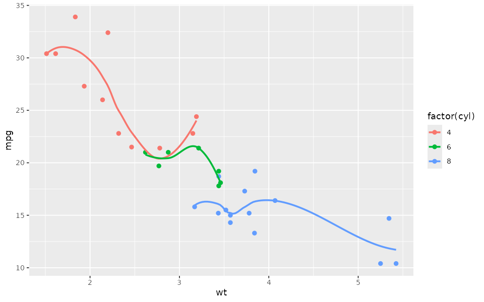
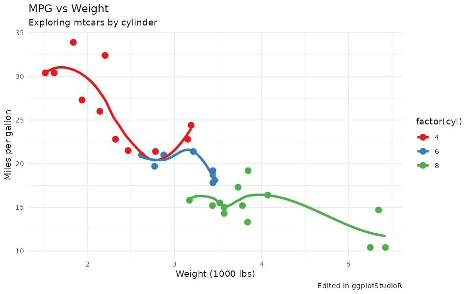

End-to-End Demo: Stepwise Editing and Generated Code
end-to-end-demo.RmdThis article demonstrates a full editing flow in ggplotStudioR: start with a base plot, apply control updates step by step, and inspect the generated code after each change.
Because pkgdown/vignettes are static, they cannot show live sliders or callbacks. To make that limit explicit, this article includes static screenshot-style PNGs for selected steps.
Base plot
library(ggplot2)
library(ggplotStudioR)
p <- ggplot(mtcars, aes(wt, mpg, color = factor(cyl))) +
geom_point() +
geom_smooth(se = FALSE)
p
#> `geom_smooth()` using method = 'loess' and formula = 'y ~ x'
Deterministic step sequence
journey <- ggplotStudioR:::build_demo_code_journey(base_plot_expr = "p")
summary_table <- data.frame(
step = vapply(journey, `[[`, character(1), "step_name"),
stringsAsFactors = FALSE
)
knitr::kable(summary_table)| step |
|---|
| Initial state |
| Update labels |
| Switch to minimal theme |
| Apply Set1 palette |
| Increase geometry sizes and add caption |
Generated code after each control change
for (step in journey) {
cat("\n### Step ", step$step_number, ": ", step$step_name, "\n\n", sep = "")
cat("```r\n")
cat(step$code)
cat("\n```\n")
}Step 1: Initial state
p +
ggplot2::labs(title = "", subtitle = "", caption = "", x = "", y = "") +
ggplot2::theme_gray()
# Geom size intent: point_size = 2, line_size = 1
# Use explicit geom arguments in your source plot for persistenceStep 2: Update labels
p +
ggplot2::labs(title = "MPG vs Weight", subtitle = "Exploring mtcars by cylinder", caption = "", x = "Weight (1000 lbs)", y = "Miles per gallon") +
ggplot2::theme_gray()
# Geom size intent: point_size = 2, line_size = 1
# Use explicit geom arguments in your source plot for persistenceStep 3: Switch to minimal theme
p +
ggplot2::labs(title = "", subtitle = "", caption = "", x = "", y = "") +
ggplot2::theme_minimal()
# Geom size intent: point_size = 2, line_size = 1
# Use explicit geom arguments in your source plot for persistenceStep 4: Apply Set1 palette
p +
ggplot2::labs(title = "", subtitle = "", caption = "", x = "", y = "") +
ggplot2::theme_gray() +
ggplot2::scale_color_brewer(palette = "Set1") +
ggplot2::scale_fill_brewer(palette = "Set1")
# Add discrete Brewer palette when color/fill is mapped
# Geom size intent: point_size = 2, line_size = 1
# Use explicit geom arguments in your source plot for persistenceStep 5: Increase geometry sizes and add caption
p +
ggplot2::labs(title = "", subtitle = "", caption = "Edited in ggplotStudioR", x = "", y = "") +
ggplot2::theme_gray()
# Geom size intent: point_size = 3.2, line_size = 1.4
# Use explicit geom arguments in your source plot for persistenceStatic screenshots (interactivity limitation in docs)
These PNGs are static captures for documentation only. In the app, updates happen live as controls move.

Base plot (static screenshot).

After label/theme changes (static screenshot).

After palette and size updates (static screenshot).
Reproducing the journey in code
edited_plots <- ggplotStudioR:::build_demo_plot_journey(p)
length(edited_plots)
#> [1] 5
class(edited_plots[[1]])
#> [1] "ggplot2::ggplot" "ggplot" "ggplot2::gg" "S7_object"
#> [5] "gg"You can inspect any step, for example:
edited_plots[[5]]
#> `geom_smooth()` using method = 'loess' and formula = 'y ~ x'